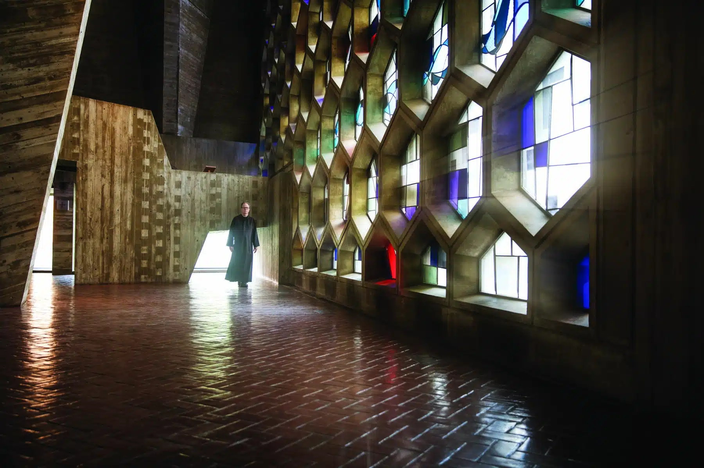
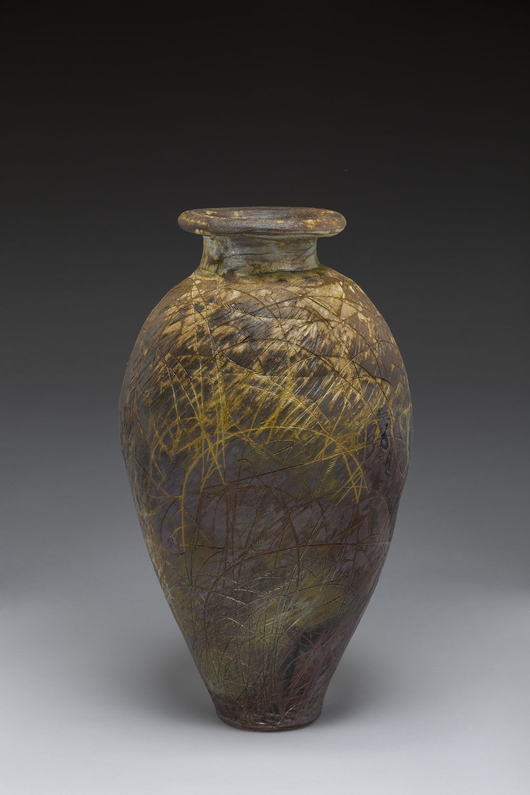
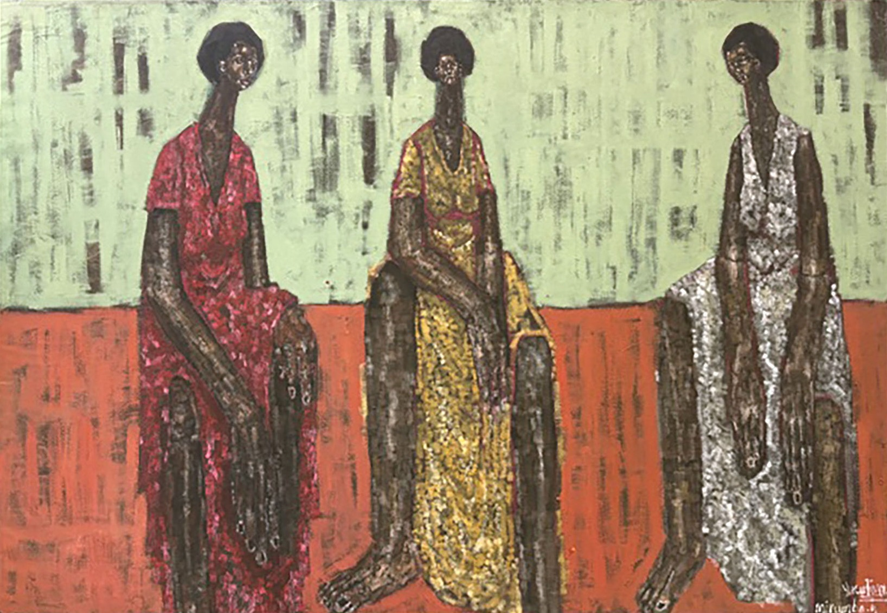

The Cause
Every Lot Gives Back.
Every dollar raised on October 22 flows to the enduring mission of Saint John's Abbey — more than a century and a half of prayer, hospitality and art on the shores of Lake Sagatagan.
Saint John's Abbey
Founded in 1856, Saint John's Abbey is one of the largest Benedictine monasteries in the Western Hemisphere. Its monks have spent more than a century and a half building a community where work, prayer and hospitality are inseparable — and where art has always been part of the vocation, from Marcel Breuer's landmark abbey church to the hand-illuminated pages of The Saint John's Bible.
Proceeds support the care of the monastic community and the abbey's ministries of hospitality and the arts.

Impact
What Your Support Makes Possible

Your support helps sustain Saint John's Abbey as a place of spiritual renewal, inspiration, and creativity—nurturing the people and ideas that go on to make a meaningful impact in the world.
At Saint John's, inspiration often leads to unexpected possibilities. A recent example is the Abbey's relationship with renowned organ builder Martin Pasi. While working on the Abbey Church organ during the pandemic, Pasi saw an opportunity for Saint John's to help preserve and advance the art of organ building. Today, apprentices are being trained at Saint John's for future generations.
It is this spirit of faith, creativity, and possibility that has helped remarkable ideas take root—from Minnesota Public Radio to the Abbey's Japanese pottery studio and volunteer programs.
Your support helps ensure that this spirit continues to inspire what comes next.
Richard Bresnahan, Saint John's Pottery — a work of the hand that grew from the Abbey.
Nairobi
Supporting Alfajiri

10% of event proceeds will support Alfajiri Street Kids Art in Nairobi, Kenya, providing vulnerable children and youth with opportunities to learn, create, and build brighter futures through art, education, and mentorship.
Alfajiri's work is closely connected to the Saint John's community, with Saint John's graduates serving there through the Benedictine Volunteer Corps, alongside a larger group of volunteers who visit during winter break. Together, these efforts help foster meaningful relationships and opportunities for young people in Nairobi.
Yusuf Mirumbe · mentor and teacher at Alfajiri Street Kids Art
With Thanks